Control View Using Camera Toolbar
You can use the camera toolbar to perform a number of viewing operations
interactively. Display the toolbar and interactively set the camera motion mode,
principal axis, scene light, projection type, and playback settings by selecting
Camera Toolbar from the View
menu in a figure. Alternatively, use the cameratoolbar function.
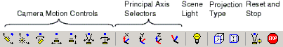
Note
By default, MATLAB® displays a plot with an aspect ratio that fits the figure window. This
behavior can lead to distortion for 3-D graphics as you move the camera around the
scene. To avoid possible distortion, the camera toolbar automatically switches to
the 3-D visualization mode. Alternatively, you can enable the 3-D visualization mode
using the command axis vis3d.
Camera Motion Controls
Camera motion modes allow you to manipulate the camera axes interactively. Set the
camera motion mode by selecting buttons in the camera toolbar. Alternatively,
specify the mode using the command
cameratoolbar("SetMode",mode).
In the motions illustrated in the diagrams in this table, the camera remains pointed at the camera target. For an illustration of the graphics properties involved in camera motion, see Camera Graphics Terminology.
| Camera Motion Mode | Diagram |
|---|---|
|
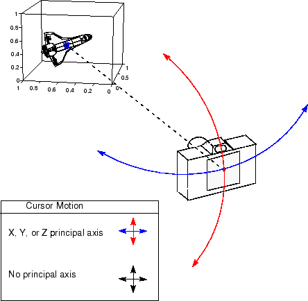 |
| Not applicable |
|
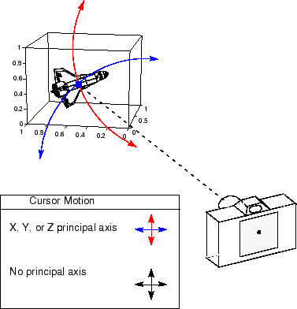 |
|
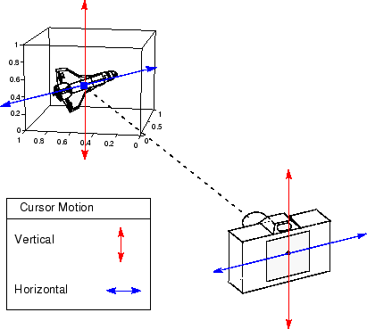 |
|
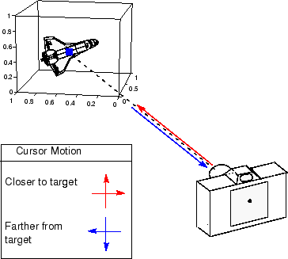 |
|
|
|
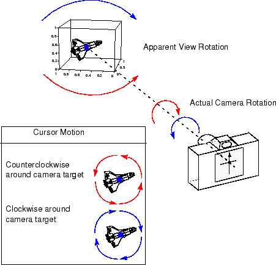 |

Principal Axis Selectors
The principal axis of a scene defines the direction that is oriented upward on the screen and constrains camera motion along axes that are parallel and perpendicular to the principal axis. Specifying a principal axis is useful if your data is defined with respect to a specific axis.
The Orbit Camera and Pan/Tilt Camera modes operate with respect to a particular
axis. Select a principal axis (Principal Axis X 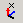, Principal Axis Y , or Principal Axis Z  ) or no axis (No Principal Axis
) for constrained motion in the camera
toolbar.
) or no axis (No Principal Axis
) for constrained motion in the camera
toolbar.
For the z-axis, which is the default principal axis for a 3-D view:
Horizontal cursor motion results in camera rotation about a vertical axis that passes through the point defined by the
CameraTargetproperty and is parallel to the z-axis.Vertical cursor motion results in camera rotation about a horizontal axis that is perpendicular to the plane defined by the z-axis and the line through the points defined by the
CameraTargetandCameraPositionproperties.
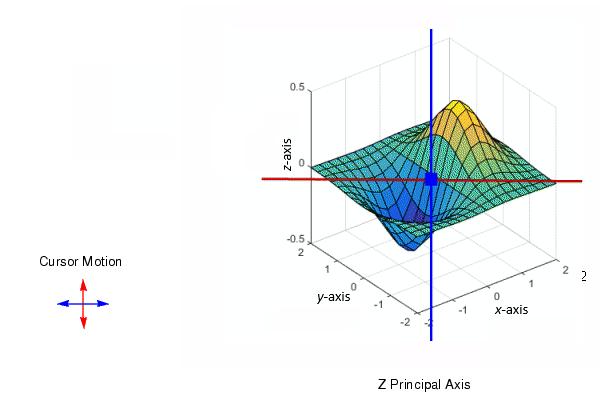
Scene Light
A scene light casts light on any patch and surface objects in axes. Create and toggle a light source by selecting Toggle Scene Light in the camera toolbar. Move the scene light by selecting Orbit Scene Light in the camera toolbar. Axes can have only one scene light.
Projection Type
MATLAB uses graphical projection to display 3-D objects on a 2-D screen. Toggle the projection type by selecting Orthographic Projection 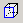 or Perspective Projection 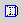 in the camera toolbar. By default, the projection type is orthographic.
Orthographic projection projects the viewing volume as a rectangular parallelepiped (a box with six rectangular faces). Relative distance from the camera does not affect the size of objects. This projection type is useful when you want to maintain the actual size of objects and the angles between objects.
Perspective projection projects the viewing volume as the frustum of a pyramid (a pyramid whose apex has been cut off parallel to the base). Distance causes foreshortening; objects farther from the camera appear smaller. This projection type is useful when you want to display realistic views of real objects.
For more information, see Understanding View Projections.
Reset and Stop
Reset or stop the camera and scene light by selecting Reset Camera and Scene Light 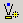 or Stop Camera/Light Motion in the camera toolbar.
Resetting returns the camera and light to the state they were in when the interactions began.
Stopping causes the camera and light to stop moving, which can be useful if you apply too much cursor movement.